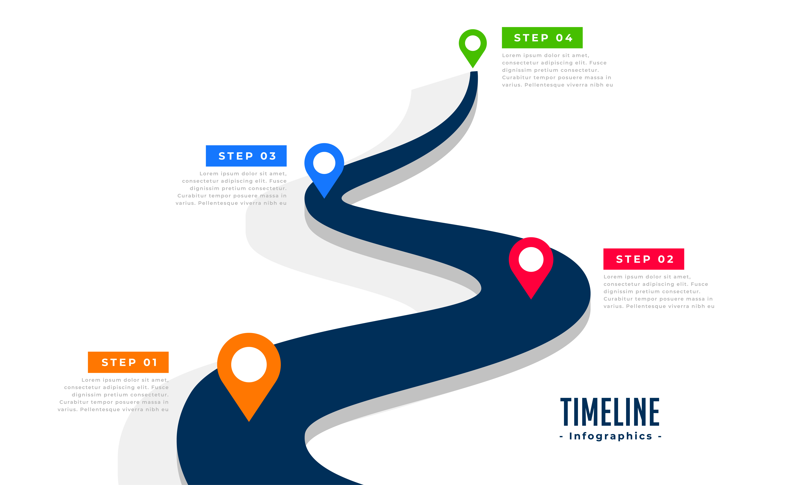

About Me
I’m a focused and curious developer based in Kenya, passionate about backend development and solving real-world problems with technology.
A Computer science student at Chuka University and Software Engineer at Power learn project.
- Age: 19
- Location: Kenya
- Personality: Detail-Oriented, Structured, Independent
Interests
- Backend Development
- Machine Learning & AI
- Street Racing & Car Restorations
- Helping Others
Technical Skills
- Languages: Python
- Frameworks: FastAPI
- Databases: SQLite
- Tools: Git, VS Code
- Concepts: JWT Auth, REST APIs, OOP
Learning Journey
- Completed Python basics
- Focusing on backend development
- Preparing to enter machine learning
Career Goals
Short-Term
- Master FastAPI and backend design
- Complete several projects
- Gain confidence in database management
Long-Term
- Specialize in AI and Machine Learning
- Work on real-world impactful applications
- Educate and support others in tech